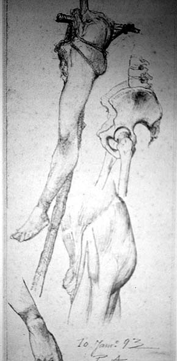

|
|  |
|
Pedro Américo de Figueiredo e Melo, Estudo de anatomia para 'Tiradentes'
|
Most importantly, unlike the new symbols of positivism and the 'Mariannes' and phrygian hats borrowed from French republican iconography, the image of Tiradentes already possessed a local trajectory prior to 1889: since the mid-century, his life and death had been the subject of poems and stories of more or less vaguely antimonarchical tendencies, culminating in an open conflict around the inauguration of a monument to the Emperor D. Pedro I (in whose grandmother's name Tiradentes had been condemned to death) in 1862, on the very same square where the execution had taken place seventy years earlier. Republicans circulated pamphlets against the 'bronzen lie', and the police had to be mobilised to prevent serious disorder. After 1889, the construction of a new monument was advocated by the 'Jacobin' wing of the republicans; finally, the square was rebaptised as 'Praça Tiradentes' and the statue erected in front of the new parliament ('Palácio Tiradentes').
|